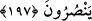
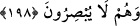

197. Allah’ın dışında taptıklarınızın ne size yardıma güçleri yeter ne de
kendilerine yardım edebilirler.
Ey puta tapanlar! “O’nun dışında” yani, Allah Teâlâ’yı bırakarak “taptıklarınızın”
hiçbir konuda “ne size yardıma güçleri yeter, ne de” başlarına bir sıkıntı geldiğinde
“kendilerine yardım edebilirler.”
Bu ayetin muhtevâsı daha önce puta tapanları kınamak için zikredilmişti. Burada ise
putlara ve onlara kulluk edenlere aldırış etmemenin sebeplerini tamamlamak üzere
zikredilmiştir. Bu sebeple bir tekrar söz konusu değildir.
198. Onları doğru yola çağırmış olsanız işitmezler. Ve onları sana bakar görürsün,
oysa onlar görmezler.
“Doğru yolu göstermeleri” tuzak kurmak ve diğer hususlarda maksadlarınıza erişmek
“için onlara” putlara “duâ etseniz” yardım etmek bir tarafa duânızı bile “işitmezler.”
Yaratılmış olmalarına rağmen peygamberlerin ve velîlerin ruhâniyetlerine yönelmek
bunun aksinedir. Çünkü onlardan istimdad (yardım talebinde bulunmak), onlarla
tevessül (onları vesîle kılmak) ve onlara intisab, onların Hakk’ın mazharları, nurlarının
tecellîgâhları, kemâlâtının aynaları, zâhir ve bâtın bütün hususlarda O’nun huzurunda
şefaatçi olmalarındandır. Bunun böyle olmasında pek çok hikmetler vardır. Bu asla şirk
değil, bilakis tevhidin ta kendisidir. Nurları bizzat doğdukları yerlerden algılamak ve
sırları yazılı oldukları kendi sayfalarından keşfetmektir.
Sâib der ki:
Öldü diye gönül ehlinin yardımından ümidini kesme
Gönül ehlinin uykusu/ölümü aynen uyanıklık gibidir
“Onları sana bakar görürsün,” buradaki görme baş gözüyle görmedir. Hitap,
müşriklerin her birinedir. Yani ey gören kimse, gözünle bakınca putların sana doğru
bakan kimselere benzediğini görürsün. Müşrikler putlarına parlak ve ışık saçan
cevherlerden gözler taktıkları ve onları baktığı şeye doğru gözbebeğini çeviren kişi gibi
şekillendirdikleri için onların seni gördüğü hayâline kapılırsın. “oysa onlar
görmezler.” Halbuki onlar görmeye güç yetiremezler. Önceki ayetlerde putların
işitmekten âciz oldukları belirtildikten sonra bu ayette, görmekten de âciz oldukları
ifade edilmiştir.